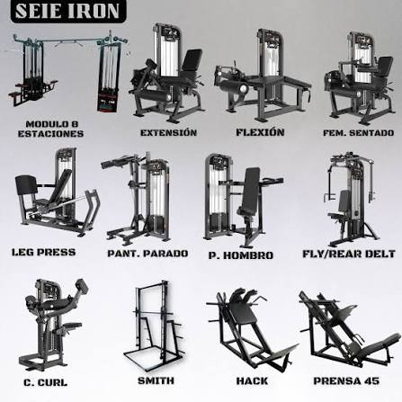

🏋️ Ejercicios básicos con máquinas
- Prensa de piernas
- Jalón al pecho
- Press de pecho
- Extensión de piernas
- Curl de bíceps en máquina
Las máquinas ayudan a mantener una técnica más segura para principiantes.

Las máquinas ayudan a mantener una técnica más segura para principiantes.
